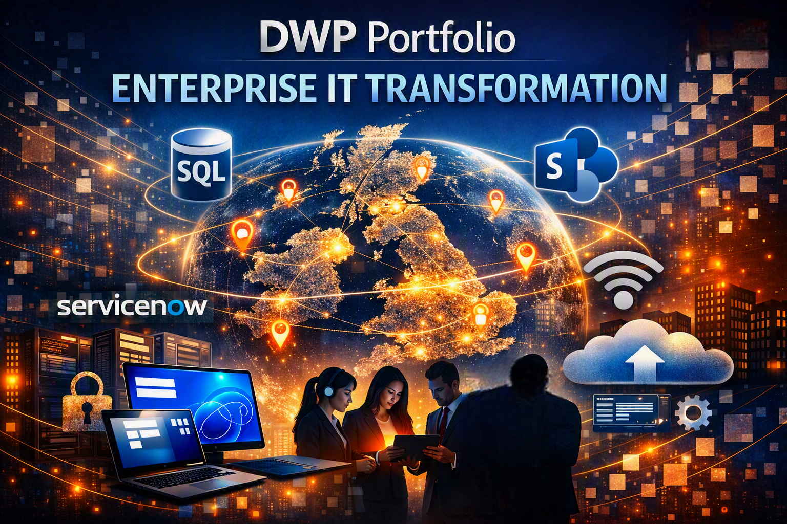

Case studies from real transformation programmes delivered successfully.
This page showcases a selection of programmes I’ve delivered across secure infrastructure,
cloud transformation, digital workplace and enterprise environments. Each case study outlines
the requirements, scope, delivery approach and measurable outcomes achieved.
These examples demonstrate how disciplined programme leadership, structured governance and
multi‑supplier coordination come together to deliver successful transformation in complex,
high‑risk environments.
CASE STUDIES
Programme Delivery Case Studies
Real-world examples of cyber security, cloud transformation and enterprise infrastructure programmes delivered across NHS, Defence and global organisations.
SECURE INFRASTRUCTURE
Home Office – Secure Infrastructure Transformation
A complete redesign and implementation of a secure public‑sector cloud platform,
unified device ecosystem and integrated access to critical business applications
across a nationwide encrypted WAN. This programme modernised the Home Office’s
technology estate and strengthened operational capability at national scale.
CloudSecurityInfrastructurePublic Sector
Overview
We delivered a secure outsourced IT infrastructure platform within a compliant
public‑sector cloud environment. The programme introduced modern device
management, secure WAN connectivity and integrated access to critical business
applications supplied by multiple delivery partners.
The Challenge
The legacy estate suffered from fragmented infrastructure, inconsistent security
controls, ageing devices, siloed application access and increasing pressure to meet
stringent government security standards. A unified, secure, scalable platform was
required to support thousands of users across a protected national WAN.
Programme Mandate
The Home Office commissioned a full redesign and build of a secure cloud‑based
operating environment, including end‑to‑end secure services, multi‑partner
application integration and compliance with all government security and operational
standards.
Platform Design & Architecture
The new platform was engineered as the foundation for all services delivered across
the estate. Key architectural components included:
Encrypted WAN connectivity across all operational sites
Centralised identity & access management
Interoperability framework for partner‑provided applications
This architecture ensured security, performance and future scalability.
Secure Digital Services Delivered
A suite of fully managed secure services was deployed across the WAN:
Secure Email Services – protected communication across departments
Remote Access – flexible, policy‑driven working
Mobile Device Management (MDM) – full lifecycle control of mobile endpoints
Application Access Integration – secure connectivity to critical business systems
All services were unified under a single governance and operational model.
Multi‑Partner Delivery Model
The programme required coordinated delivery across multiple organisations. We led:
Architectural governance
Security assurance
Infrastructure build and deployment
Device rollout and management
Integration with partner‑provided applications
Testing, transition and service onboarding
This collaborative model ensured consistent standards and a seamless user
experience.
Key Outcomes
The programme delivered a modern, secure and scalable cloud platform that
strengthened the Home Office’s operational capability. Key outcomes included:
Modern cloud platform replacing legacy infrastructure
Unified device estate across all user groups
Consistent security posture across all sites
Improved operational resilience through cloud hosting
Enhanced mobility via secure remote access and MDM
Integrated access to critical business applications
Future‑ready architecture supporting national responsibilities
Synchrony – Global Managed Services Transformation
A 2‑year global transition and transformation programme delivering a modern,
resilient managed services model across the US, India and the Philippines.
The programme established a unified ITSM platform, modernised end‑user
technology, strengthened infrastructure towers, and delivered a 24/7 global
service desk supporting 125,000 users.
Overview
Synchrony embarked on a multi‑tower transformation to modernise global IT
operations, strengthen service resilience, and elevate user experience across
financial‑grade environments. Over a 2‑year delivery window, I led the full
transition from the incumbent MSP to a new integrated global managed
services model, executed through phased service go‑lives to ensure stability,
compliance and zero disruption.
Global Service Operations
Synchrony required a service model capable of supporting regulated financial
operations across multiple time zones. Key capabilities delivered included:
24/7 Global Service Desk across US, India and the Philippines
Unified ServiceNow ITSM platform (Incident, Request, Change, Problem, Major Incident)
Modernised telephony and contact‑centre systems aligned to financial compliance
These capabilities created a predictable operational rhythm essential for
financial‑sector stability and regulatory adherence.
Incremental Service Go‑Lives
The programme was structured around controlled, phased activation of each
service tower:
High‑risk components: Data Centre Migration, Supply Chain, Device Refresh
This approach ensured uninterrupted service, reduced early‑life incidents, and
enabled continuous learning between phases.
Digital Experience & Automation
To modernise user engagement and reduce operational load, the programme
introduced:
Santander – AD DC Server Upgrade & Domain Services Promotion
A critical infrastructure upgrade modernising Santander’s Active Directory Domain Controller
environment. The programme uplifted server OS versions, promoted forest and domain functional
levels, strengthened identity management, and improved resilience across regulated financial‑services
operations.
Overview
Between March and December 2017, Santander undertook a major upgrade of its Active Directory
Domain Controller (AD DC) environment. I led the programme to modernise in‑situ domain
controllers, uplift server OS versions, and promote AD DS forest and domain functional levels
to align with Microsoft’s enterprise standards.
The Challenge
Santander’s legacy AD DC estate required modernisation to support future scalability, security,
and compliance. The upgrade needed to be executed without disrupting business‑critical
financial operations, requiring careful sequencing, rollback planning, and multi‑team
coordination across infrastructure, security and compliance functions.
Programme Mandate
Upgrade domain controller servers to Windows Server 2008 R2, promote AD DS functional levels,
strengthen identity‑management capability, and ensure full alignment with Santander’s
governance and regulatory frameworks.
Key Deliverables
The programme delivered a complete uplift of Santander’s AD DC environment:
Rollback and validation plans ensuring zero downtime
Schema verification, replication health checks & multi‑site testing
Cross‑team coordination with infrastructure, security & compliance
Testing & Validation
Extensive pre‑production testing ensured stability and compliance:
Schema validation and replication integrity checks
Multi‑site testing across Santander’s operational footprint
Controlled upgrade windows with rollback assurance
Outcome
The upgrade delivered a secure, stable and future‑ready Active Directory environment,
strengthening Santander’s identity‑management capability and enabling integration with
modern Microsoft technologies.
Impact
The programme improved operational resilience, enhanced security posture, and established a
foundation for future cloud and hybrid identity initiatives.
Deutsche Bank – Global M365 Rollout & User Adoption
A global transformation programme modernising Deutsche Bank’s unified communications ecosystem.
The initiative deployed Microsoft Teams as the central collaboration hub, retired legacy telephony,
uplifted user experience, and delivered structured adoption across 16,000 employees worldwide.
Digital WorkplaceMicrosoft 365User AdoptionUnified Communications
Overview
Between 2020 and 2022, Deutsche Bank undertook a major global programme to modernise
collaboration and communication across its workforce. The goal was to retire fragmented
legacy platforms and fully leverage Microsoft Office 365, delivering a seamless, secure,
cloud‑based collaboration experience for 16,000 employees across global offices.
The Challenge
Deutsche Bank’s legacy telephony and conferencing systems created inconsistent user
experience, operational overhead, and limited integration with modern digital workplace
tools. The organisation required a unified collaboration platform and a structured adoption
strategy to ensure employees embraced new ways of working.
Programme Mandate
Deploy Microsoft Teams as the central collaboration hub, integrate chat, voice, video and
document sharing, embed workflows into ServiceNow, retire legacy systems, and deliver a
global user‑adoption programme with multilingual support.
Key Deliverables
The programme delivered a complete transformation of Deutsche Bank’s collaboration
ecosystem:
Unified Communications Transition – migration to Teams Voice & Meetings
Structured User Adoption Strategy – training, champions network, multilingual support
ServiceNow Integration – embedded M365 workflows for streamlined support
User Adoption & Cultural Change
Adoption was treated as a cultural transformation, not just a technical rollout. The programme
delivered structured training, communication, and engagement to ensure employees embraced
new digital ways of working.
Outcomes
The programme delivered measurable improvements across collaboration, reliability and cost:
Enhanced user experience and global collaboration
Improved operational reliability and reduced support overhead
Significant cost savings through platform consolidation
Modern digital workplace foundation for future innovation
Result
Deutsche Bank transitioned from fragmented legacy systems to a unified, cloud‑based
collaboration platform. Employees gained a modern, connected and agile digital workplace,
enabling secure collaboration from anywhere and supporting the bank’s strategic vision for
digital excellence.
Download Deutsche Bank Case Study PDF →
GLOBAL IT ROLLOUT
HSBC – Global Windows 11 Rollout & User Adoption Programme
A global end‑user technology transformation delivering Windows 11 to 46,000 users
across 750 locations. The programme modernised HSBC’s desktop experience,
strengthened security baselines, uplifted device performance, and enabled a more
agile, cloud‑connected workforce aligned with the bank’s digital‑banking vision.
Windows 11Digital WorkplaceSecurityGlobal Rollout
Overview
HSBC delivered one of the largest end‑user technology upgrades in its history:
a global rollout of Windows 11 designed to modernise the desktop experience,
uplift security, and support a cloud‑connected workforce. The programme
transitioned 46,000 users across 750 locations through structured waves,
ensuring minimal disruption and full compliance with financial‑sector
regulatory standards.
The Challenge
HSBC’s legacy desktop estate required modernisation to support new digital
capabilities, enhanced security controls, and improved performance. The
challenge was to deliver a global operating‑system upgrade without disrupting
business‑critical financial operations, while ensuring employees understood and
adopted new Windows 11 features.
Programme Mandate
Execute a global Windows 11 rollout, refresh legacy devices, uplift security
baselines, integrate rollout workflows into ServiceNow, deliver multilingual
adoption programmes, and establish global governance and reporting for
progress, compliance and user satisfaction.
Key Deliverables
The programme delivered a complete uplift of HSBC’s end‑user technology:
Global deployment to 46,000 users across 750 locations
Modern device refresh with secure, high‑performance builds
ServiceNow integration for rollout tracking & support workflows
User adoption programme with multilingual training & champions network
Performance improvements: reduced boot times & improved stability
Global dashboards for compliance, progress & satisfaction metrics
Transformation Approach
The rollout was executed through incremental regional go‑lives, supported by
automation and analytics to monitor deployment success. A dedicated User
Adoption Office coordinated communications, training and engagement,
ensuring employees understood new Windows 11 features such as Snap
Layouts, Teams integration and enhanced security controls.
Security & Compliance Alignment
Windows 11’s security architecture was mapped directly to HSBC’s enterprise
risk framework, ensuring compliance with financial‑sector regulations and
internal audit standards. The rollout strengthened endpoint protection, identity
assurance and data‑loss prevention across all regions.
Outcomes
The programme delivered measurable improvements across security, user
experience and operational efficiency:
Modernised desktop experience for 46,000 users
Improved endpoint security & compliance posture
Reduced operational overhead & support demand
Enhanced productivity through Microsoft 365 integration
Scalable foundation for future digital‑workplace initiatives
Strategic Impact
The Windows 11 rollout positioned HSBC to deliver a consistent, secure and
high‑performance user experience globally. It reinforced the bank’s commitment
to innovation, resilience and digital transformation — enabling employees to
work smarter, faster and more securely in a modern financial‑services
environment.
Download HSBC Case Study PDF →
ENTERPRISE IT TRANSFORMATION

DWP – Enterprise IT Transformation Portfolio
A multi‑workstream enterprise transformation modernising the Department for Work
and Pensions’ national technology estate. The portfolio uplifted SQL platforms,
collaboration tools, workspace management, wireless infrastructure, identity
services, and ITSM operations — strengthening resilience, security and service
delivery across the UK’s largest public‑sector department.
Overview
The Department for Work and Pensions (DWP) undertook a comprehensive
enterprise‑wide technology transformation programme to modernise its
infrastructure, improve service delivery, and strengthen operational resilience.
The portfolio comprised multiple concurrent workstreams, each contributing to
a unified, secure and scalable digital environment supporting thousands of
users nationwide.
Programme Scope
The portfolio delivered modernisation across core infrastructure, collaboration,
identity, workspace management and service‑management capabilities:
SQL Upgrade
Upgraded legacy SQL environments to supported versions, improving
performance, security and maintainability. Delivered automated migration
scripts, schema validation and post‑upgrade optimisation across mission‑critical
databases.
Condeco Rollout
Implemented Condeco workspace management across DWP sites, enabling
intelligent desk booking, meeting‑room scheduling and occupancy analytics.
Integrated with Active Directory and Exchange for seamless authentication and
calendar synchronisation.
Unified Communications
Transitioned from Microsoft Communicator and Lync to Microsoft Teams,
establishing a single, secure collaboration platform with enterprise‑grade
reliability for voice, video and messaging.
Managed Print Services
Deployed a modern Managed Print solution across regional offices, consolidating
print infrastructure and introducing secure print release, cost tracking and
sustainability reporting — reducing print volume and operational overhead.
SharePoint Development
Delivered customised SharePoint Online sites for document management,
workflow automation and departmental collaboration. Introduced metadata‑driven
search, version control and Power Automate integration.
Business Continuity & Disaster Recovery
Designed and tested comprehensive BC & DR frameworks, including failover
simulations and recovery validation for critical systems. Improved recovery time
objectives and ensured compliance with government resilience standards.
Quest Deployment
Implemented Quest migration and identity‑management tools to support Active
Directory consolidation, user provisioning and lifecycle management — enabling
faster onboarding and reduced administrative complexity.
Wireless Access Point Deployment
Rolled out enterprise‑grade wireless access points across DWP sites, delivering
secure, high‑performance connectivity for staff and visitors. Integrated with NAC
and centralised monitoring for real‑time visibility.
ITSM Integration
Integrated multiple service‑management platforms into a unified ITSM ecosystem
using ServiceNow for incident, change and asset management. Delivered
automation, improved SLA compliance and end‑to‑end operational visibility.
Outcomes
The portfolio delivered measurable improvements across infrastructure,
collaboration, resilience and operational efficiency:
Modernised infrastructure supporting thousands of end‑users
Enhanced collaboration through unified platforms
Improved operational resilience and disaster‑recovery readiness
Reduced costs through consolidation and automation
Strengthened governance, compliance and service transparency
Strategic Impact
The programme delivered a cohesive digital foundation enabling DWP to operate
with greater agility, efficiency and resilience. It aligned technology with
organisational goals, empowering teams to deliver public services more
effectively through a secure, modern and connected workplace.
Download DWP Case Study PDF →